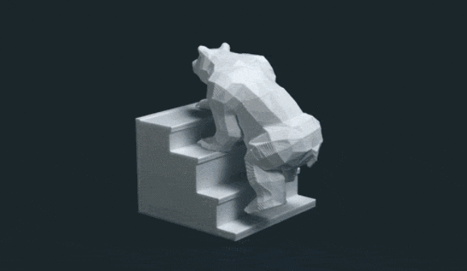

What is animation?
Animation is a method of photographing successive drawings, models, or even puppets, to create an illusion of movement in a sequence. Because our eyes can only retain an image for approx. 1/10 of a second, when multiple images appear in fast succession, the brain blends them into a single moving image.

In traditional animation, pictures are drawn or painted on transparent celluloid sheets to be photographed. Early cartoons are examples of this, but today, most animated movies are made with computer-generated imagery or CGI.
